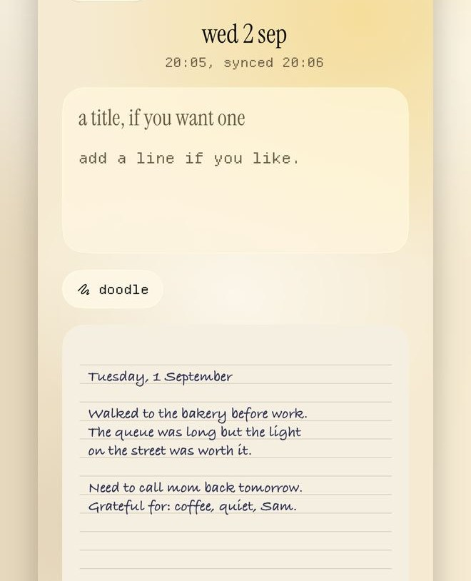
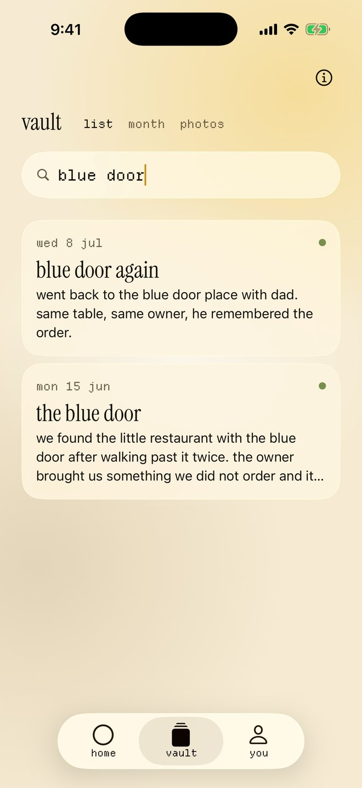
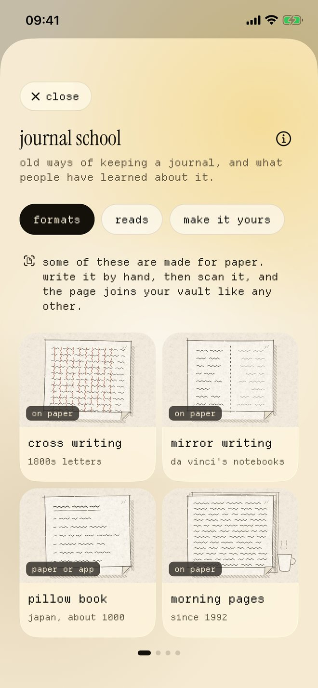
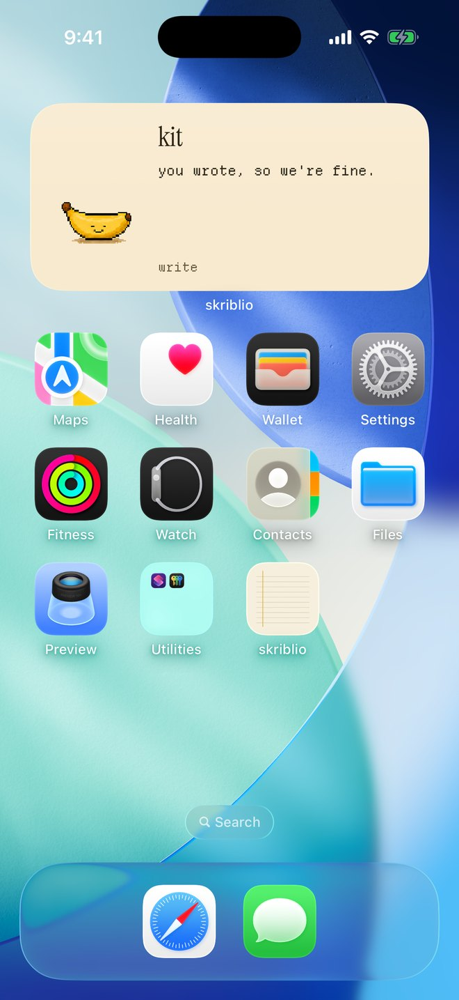
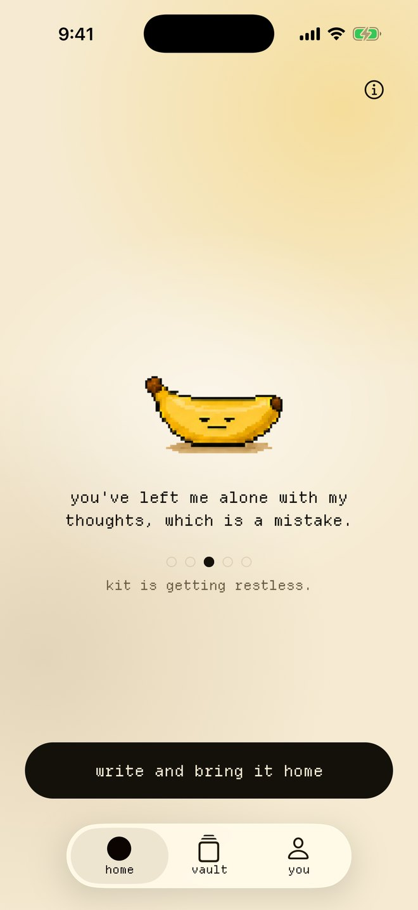
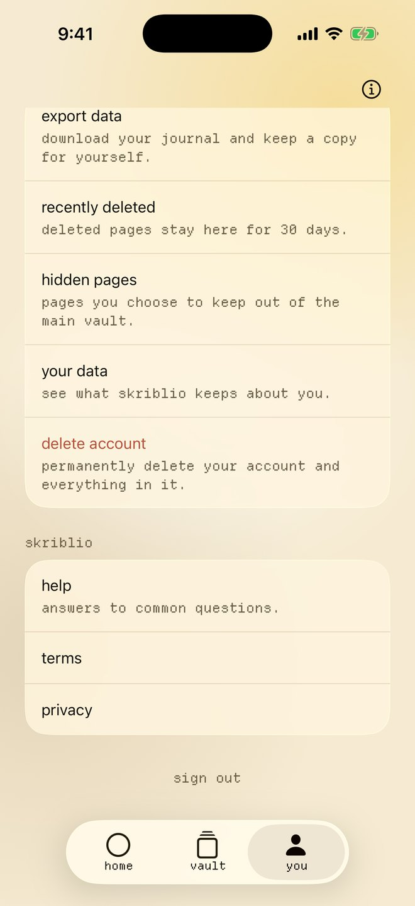

a journal with a banana in it.
type in the app, record a voice note, or photograph a page from the paper notebook you already keep. it all goes into one private vault you can search, and a pixel banana notices when you go quiet.
pick a plan and the first two weeks are free. after that it's $49.99 a year or $9.99 a month, and both plans include the desktop companion.

write here, say it out loud, or photograph your paper journal.
each one counts as journaling for that day, and everything goes into the same vault.
- type a pagetap 'journal' and write about your day, or whatever is on your mind. there's a question at the top of the page for when you don't know where to start.
- say it out loudrecord up to five minutes with the 'voice' button. the recording is kept exactly as you said it, and an iphone can type it up without sending it anywhere.
- photograph a page'scan' opens the camera so you can photograph a page from your paper notebook. if you choose to have it typed up, the handwriting becomes text you can search, and the photo stays as you took it.
you can fix any word that comes out wrong, and your phone remembers the change for the next page. your notebook stays your notebook, and skriblio is the index.

when the page is blank, start with a question.
tap 'get a prompt' under a new page and choose from over forty questions in eight topics. each one has a quick two minute version for when you're short on time, and longer ones for when you aren't.
- what are three things that happened today?
- is there a conversation you keep replaying?
- what tired you out today, and what gave you energy?
- how are you different from a year ago?
find the page you half remember from months ago.
every page, photo, doodle and voice note goes into your vault, newest first. search finds any word in your journal, even in handwriting you've had typed up and voice notes you've had transcribed.
you can also pick a day on the calendar, or show only your favourites, your photos or your voice notes. tap the heart on anything to make it a favourite, and it hangs on your memory tree at the top of the vault. the tree grows as you add more, and it turns to night after sunset where you are.
export all of it whenever you like, with or without a plan.

sixteen ways to keep a journal.
they're in journal school, in the 'you' tab, and some of them are hundreds of years old. each format shows what its page looks like, where it comes from and how to do it.
tap 'start a page like this' and a new page opens with the format laid out for you. formats made for paper are written by hand and scanned in, so they join the rest of your vault. every format you try gets its own stamp, like a passport.
there's no order to follow and nothing to finish. it's there to teach, and it isn't therapy or medical advice.

formats
they run from cross writing and the pillow book to the captain's log and the dream log. every one comes with a drawing of its page.
reads
these are short and longer articles on the history of diaries and what research has found about writing things down. one is about samuel pepys and his secret shorthand.
make it yours
if you keep a paper journal, this part has small ideas for it, like washi tape, pressed leaves or a different pen for each mood.
your banana lives on your home screen.
there are four widgets, and on an iphone some of them also fit on the lock screen. 'your banana' shows what it's up to, and 'this week' marks the days you journaled.
'tonight's prompt' puts a new question on your home screen every evening, with buttons to start a page or record a voice note. 'from your tree' brings back one of your favourites from a month or a year ago. it's the only widget that ever shows anything from your journal.

leave it long enough and it may go rogue.
you don't have to journal every day. skriblio never sends a notification, and there's no streak to keep.
after two quiet days your banana gets restless, and after five it packs a bag and leaves home. you'll catch it on your home screen widget, and on your computer if you use the desktop companion. journal anything at all and it comes straight back.

pick your banana
there are ten of them and one is yours. you can swap it for another in the 'you' tab whenever you like.
 coathands in the peel
coathands in the peel dalesquare glasses, blank stare
dalesquare glasses, blank stare plopprefers the floor
plopprefers the floor huskhalf out already
huskhalf out already bricka plantain, and not cute
bricka plantain, and not cute skribliocarries the mail bag
skribliocarries the mail bag moethe monk
moethe monk nedround, and has had enough
nedround, and has had enough shushthe librarian
shushthe librarian kitlying down, on purpose
kitlying down, on purpose
and on your desk.
the desktop companion puts your banana on your computer screen while you work. on a mac it walks and runs about, sits on top of your windows, peeks out from behind them and keeps still during calls.
click it and a small card opens with a 'journal' button, which opens a cream page right there. what you write goes into the same vault as your phone, and once you've journaled it walks off the screen until tomorrow.
it comes with both plans. you can download an early build for mac now, and windows isn't out yet.
your journal stays yours.
the banana only knows which days you journaled, and it never sees what you write. nothing you write is sold or used for ads, and no model is trained on it.
- lock itturn on 'face id lock' in the 'you' tab, or 'fingerprint lock' on android, and skriblio asks for it whenever you come back.
- export any timeopen 'export data' in the 'you' tab for a text file, a pdf or a zip with every photo. it works with or without a plan.
- delete any timetap 'delete account' in the 'you' tab and confirm. everything is deleted straight away, and there's no waiting period.
- typing up asks firstthe first time you scan a page, skriblio asks if you'd like the handwriting typed up. nothing is sent away for that unless you say yes. voice notes are only ever typed up on the phone itself.
- where it's keptyour pages are saved on your phone first, then in a private database in the eu.

the first two weeks are free.
pick a plan in the app and nothing is charged until the two weeks end. after that it renews by itself until you cancel it in apple or google settings. cancel before the two weeks are up and you pay nothing.
-
a year
$49.99
it's billed once a year, and it works out cheaper than twelve months of the monthly plan.
-
a month
$9.99
you get the same app, billed each month.
both plans include the desktop companion, and apple and google show the price in your currency. you can export or delete your journal with or without a plan.
questions
can i use my paper journal
yes, tap 'scan' on a new page and take a photo of a page from the notebook you already use. it goes into the same vault as everything else, and skriblio doesn't sell notebooks or ask you to give yours up.
can skriblio search my handwriting
yes, if you choose to have your pages typed up. the handwriting becomes text you can search, and the photo stays exactly as you took it. if a word comes out wrong, you can fix it, and your phone remembers the change for the next page.
can i talk instead of typing
yes, tap 'voice' on a new page and record up to five minutes. the recording is kept exactly as you said it. an iphone can also type it up without sending it anywhere, so you can search its words.
do i have to journal every day
no, and there's no streak to lose. after two quiet days your banana gets restless, and after five it packs a bag and goes rogue. journal anything at all and it comes straight back.
does skriblio send notifications
no, it never does. if you go quiet, your banana turns up on your home screen widget or your computer instead.
does the banana see what i write
no, it doesn't. your banana only knows which days you journaled, and nothing about what's on the page.
what's journal school
it's in the 'you' tab, and it shows sixteen formats people have used to keep a journal, from morning pages to the captain's log. there are also reads on the history of diaries and what research has found, and ideas for a paper journal.
is this therapy
no, it isn't. a journal can be useful, but it isn't treatment and it doesn't replace care.
is there a desktop app
yes, the desktop companion puts your banana on your mac or windows screen, and it comes with both plans. it needs the phone app, and pages you write on the computer go into the same vault. the mac version is an early build for now, and windows isn't out yet.
can i get my journal out
yes, with or without a plan. open 'export data' in the 'you' tab and pick a text file, a pdf to print, or a zip with everything in it.
how does the free trial work
when you pick a plan, the first two weeks are free, and nothing is charged until they end. after that the plan renews by itself until you cancel it in apple or google settings. if you cancel before the two weeks are up, you pay nothing.
how do i cancel
apple or google handle the subscription, so you cancel it with them. on an iphone, open settings, tap your name, then 'subscriptions' and skriblio. for android, open the play store, tap your profile, then 'payments and subscriptions'. you keep your plan until the end of the time you've paid for.
who can use skriblio
it's for adults, 18 and over. under south african law a journal counts as personal information, and anyone under 18 needs a parent's consent.